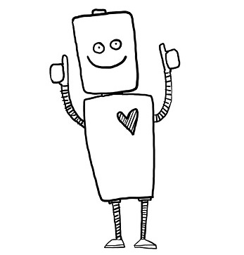

@(title: String)(content: Html)

<!doctype html>
<html lang="en" ng-app="RDash">
<head>
  <meta charset="UTF-8">
  <meta name="viewport" content="width=device-width, initial-scale=1">

	<title>RDash AngularJS</title>
  <!-- STYLES -->
  <!-- build:css lib/css/main.min.css -->
  <link rel="stylesheet" type="text/css" href="components/bootstrap/dist/css/bootstrap.min.css">
  <link rel="stylesheet" type="text/css" href="components/font-awesome/css/font-awesome.min.css">
  <link rel="stylesheet" type="text/css" href="components/rdash-ui/dist/css/rdash.min.css">
  <!-- endbuild -->
  <!-- SCRIPTS -->
  <!-- build:js lib/js/main.min.js -->
  <script type="text/javascript" src="components/angular/angular.min.js"></script>
  <script type="text/javascript" src="components/angular-bootstrap/ui-bootstrap-tpls.min.js"></script>
  <script type="text/javascript" src="components/angular-cookies/angular-cookies.min.js"></script>
  <script type="text/javascript" src="components/angular-ui-router/release/angular-ui-router.min.js"></script>
  <script type="text/javascript" src="components/ace-min-noconflict/ace.js "charset="utf-8" ></script> 
  <script type="text/javascript" src="components/jquery/jquery.min.js"></script> 
  <!-- endbuild -->
  <!-- Custom Scripts -->
  <script src="@routes.Assets.at("javascripts/dashboard.min.js")" type="text/javascript"></script>
</head>
<body ng-controller="MasterCtrl">
  <div id="page-wrapper" ng-class="{'open': toggle}" ng-cloak>

    <!-- Sidebar -->
    <div id="sidebar-wrapper">
      <ul class="sidebar">
        <li class="sidebar-main">
          <a ng-click="toggleSidebar()">
            crun
            <span class="menu-icon glyphicon glyphicon-transfer"></span>
          </a>
        </li>
        <li class="sidebar-title"><span>NAVIGATION</span></li>
        <li class="sidebar-list">
          <a href="#/index">about <span class="menu-icon fa fa-home"></span></a>
        </li>
        <li class="sidebar-list">
          <a href="#/script">crun script<span class="menu-icon fa fa-pencil"></span></a>
        </li>
        <li class="sidebar-list">
          <a href="#/cloud">manage your cloud <span class="menu-icon fa fa-cloud"></span></a>
        </li>
<!-- <li class="sidebar-list">
          <a href="#/tables">settings <span class="menu-icon fa fa-cog"></span></a>
        </li> -->
      </ul>
<!--       <div class="sidebar-footer" ng-controller="ServersCtrl">
        <div class="col-xs-12">
          <a style="cursor:pointer" ng-click="connectToWS()" ng-show="connect"><span class="text-warning"><i class="fa fa-bolt"></i></span>
          <span class="text-warning" >CONNECT</span>
          </a>
          <a style="cursor:pointer" ng-click="connectToWS()" ng-show="connected" tooltip="refresh"><span class="text-success"><i class="fa fa-check"></i></span>
          <span class="text-success" >CONNECTED</span>
          </a>     
        </div>
      </div> -->
    </div>
    <!-- End Sidebar -->

    <div id="content-wrapper">
      <div class="page-content">

        <!-- Header Bar -->
        <div class="row header">
          <div class="col-xs-12">
            <div class="user pull-right">
              <div class="item dropdown">
                <a href="#/index">
                  
                </a>
              </div>
            </div>
            <div class="meta">
              <div class="page">
                crun
              </div>
              <div class="breadcrumb-links" >
                your private cloud environment
              </div>
            </div>
          </div>
        </div>
        <!-- End Header Bar -->

        <!-- Main Content -->
        <div ui-view></div>

      </div><!-- End Page Content -->
    </div><!-- End Content Wrapper -->
  </div><!-- End Page Wrapper -->
</body>
</html>